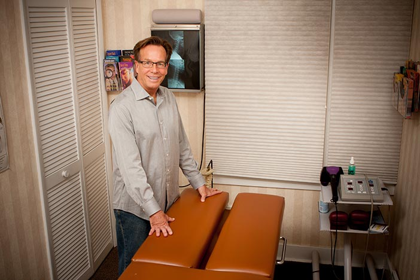

About Dr. Ray Vactor D.C.
Dr. Ray Vactor has been involved in natural healthcare for the past 35 years. In the 1980's, Dr. Vactor was the Associate Director of the national health project, Health Horizons Expo's. He and his colleagues held seminars in which health practitioners and experts from around the country would educate the public on the benefits of natural healing. He also taught nutrition, stress reduction and yoga classes at the college continuing education level. He has appeared on numerous radio and television shows, expounding the benefits of health and wellness. As well as teaching, radio and TV appearances, Dr. Ray Vactor was former radio talk show host of the cutting edge program "Quantum Health".
Dr. Vactor is the director of the Wexford Chiropractic Centre where he has been in private practice for the last 25 years. Dr. Vactor sees a tremendous need for people to know the capabilities of the body's own healing power. Through the use of specific low force chiropractic techniques, nutrition and exercise, the body can perform at its optimum level and heal itself.
Please Contact Us for More Information or to Set Up Your Free Consultation